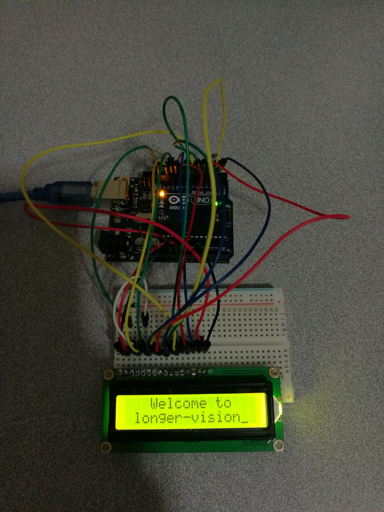

Crystal Display 1602A
Hardware Wiring

Sketch
int DI = 12;
int RW = 11;
int DB[] = {3, 4, 5, 6, 7, 8, 9, 10};//Use an array to define all needed pins
int Enable = 2;
void LcdCommandWrite(int value) {
// define for all pins
int i = 0;
for (i=DB[0]; i <= DI; i++) //总线赋值
{
digitalWrite(i,value & 01);//因为1602液晶信号识别是D7-D0(不是D0-D7)，这里是用来反转信号。
value >>= 1;
}
digitalWrite(Enable,LOW);
delayMicroseconds(1);
digitalWrite(Enable,HIGH);
delayMicroseconds(1); // delay 1ms
digitalWrite(Enable,LOW);
delayMicroseconds(1); // delay 1ms
}
void LcdDataWrite(int value) {
// define for all pins
int i = 0;
digitalWrite(DI, HIGH);
digitalWrite(RW, LOW);
for (i=DB[0]; i <= DB[7]; i++) {
digitalWrite(i,value & 01);
value >>= 1;
}
digitalWrite(Enable,LOW);
delayMicroseconds(1);
digitalWrite(Enable,HIGH);
delayMicroseconds(1);
digitalWrite(Enable,LOW);
delayMicroseconds(1); // delay 1ms
}
void setup (void) {
int i = 0;
for (i=Enable; i <= DI; i++) {
pinMode(i,OUTPUT);
}
delay(100);
// 短暂的停顿后初始化LCD
// 用于LCD控制需要
LcdCommandWrite(0x38); // 设置为8-bit接口，2行显示，5x7文字大小
delay(64);
LcdCommandWrite(0x38); // 设置为8-bit接口，2行显示，5x7文字大小
delay(50);
LcdCommandWrite(0x38); // 设置为8-bit接口，2行显示，5x7文字大小
delay(20);
LcdCommandWrite(0x06); // 输入方式设定
// 自动增量，没有显示移位
delay(20);
LcdCommandWrite(0x0E); // 显示设置
// 开启显示屏，光标显示，无闪烁
delay(20);
LcdCommandWrite(0x01); // 屏幕清空，光标位置归零
delay(100);
LcdCommandWrite(0x80); // 显示设置
// 开启显示屏，光标显示，无闪烁
delay(20);
}
void loop (void) {
LcdCommandWrite(0x01); // 屏幕清空，光标位置归零
delay(10);
LcdCommandWrite(0x80+3);
delay(10);
// 写入欢迎信息
LcdDataWrite('W');
LcdDataWrite('e');
LcdDataWrite('l');
LcdDataWrite('c');
LcdDataWrite('o');
LcdDataWrite('m');
LcdDataWrite('e');
LcdDataWrite(' ');
LcdDataWrite('t');
LcdDataWrite('o');
delay(10);
LcdCommandWrite(0xc0+1); // 定义光标位置为第二行第二个位置
delay(10);
LcdDataWrite('l');
LcdDataWrite('o');
LcdDataWrite('n');
LcdDataWrite('g');
LcdDataWrite('e');
LcdDataWrite('r');
LcdDataWrite('-');
LcdDataWrite('v');
LcdDataWrite('i');
LcdDataWrite('s');
LcdDataWrite('i');
LcdDataWrite('o');
LcdDataWrite('n');
delay(5000);
LcdCommandWrite(0x01); // 屏幕清空，光标位置归零
delay(10);
LcdDataWrite('I');
LcdDataWrite(' ');
LcdDataWrite('a');
LcdDataWrite('m');
LcdDataWrite(' ');
LcdDataWrite('d');
LcdDataWrite('r');
LcdDataWrite('.');
LcdDataWrite('p');
LcdDataWrite('e');
LcdDataWrite('i');
delay(3000);
LcdCommandWrite(0x02); //设置模式为新文字替换老文字，无新文字的地方显示不变。
delay(10);
LcdCommandWrite(0x80+5); //定义光标位置为第一行第六个位置
delay(10);
LcdDataWrite('t');
LcdDataWrite('h');
LcdDataWrite('e');
LcdDataWrite(' ');
LcdDataWrite('a');
LcdDataWrite('d');
LcdDataWrite('m');
LcdDataWrite('i');
LcdDataWrite('n');
delay(5000);
}